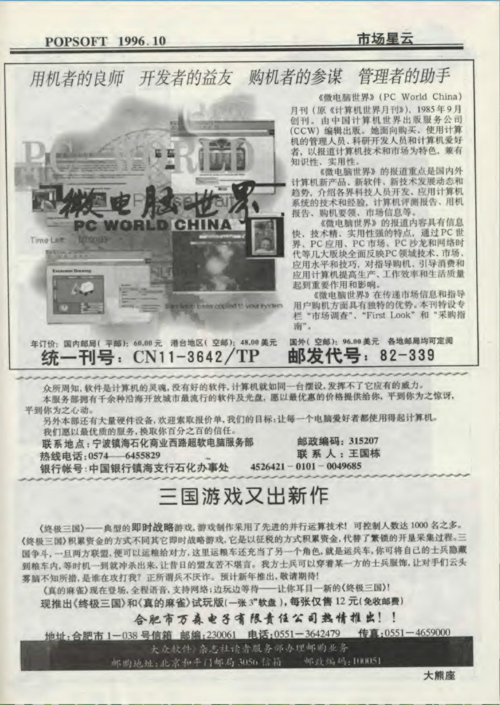
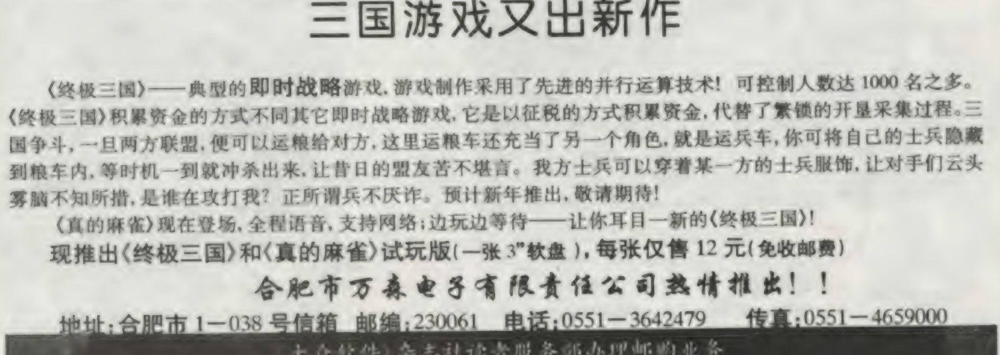
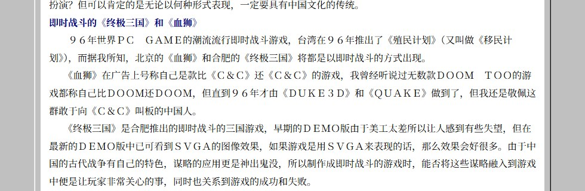
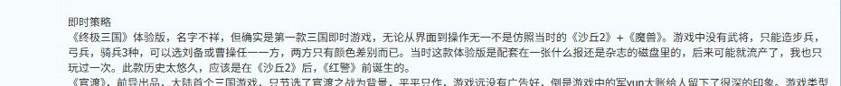

九十年代，合肥居然有人开发过一款三国游戏
2026年10月26日 星期一前导软件的《官渡》一般被认为是中国大陆第一款正式上市的原创三国游戏，1996年上半年发售。最近翻老杂志的时候我发现，差不多同一时期，合肥有一家叫"万森电子"的公司，也在做一款三国题材的即时战略游戏，叫《终极三国》。
这款游戏最终没有上市。但它在《大众软件》上打过广告，在《电脑报》上也被提过好几回，甚至多年后有玩家回忆说自己玩过它的体验版。我把能找到的原始材料凑在一起，试图还原一下这家公司和这款游戏，顺便分析分析它为什么没搞成。
一则广告
《大众软件》1996年10月号（总第15期）第89页，"市场星云"版块的下半版，有一则广告（同页还有《微电脑世界》月刊和宁波一家电脑服务部的广告）。我把这页扫描件放在这里：

图片太大，如果看不清，请在图片上右键"在新标签中打开图片"然后放大观看。
广告正文部分的局部放大图：

广告全文逐字抄录如下：
三国游戏又出新作
《终极三国》——典型的即时战略游戏，游戏制作采用了先进的并行运算技术！可控制人数达1000名之多。《终极三国》积累资金的方式不同其它即时战略游戏，它是以征税的方式积累资金，代替了繁琐的开垦采集过程。三国争斗，一旦两方联盟，便可以运粮给对方，这里运粮车还充当了另一个角色，就是运兵车，你可将自己的士兵隐藏到粮车内，等时机一到就冲杀出来，让昔日的盟友苦不堪言。我方士兵可以穿着某一方士兵的服饰，让对手们云头雾脑不知所措，是谁在攻打我？正所谓兵不厌诈。预计新年推出，敬请期待！
《真的麻雀》现在登场，全程语音，支持网络；边玩边等待——让你耳目一新的《终极三国》！
现推出《终极三国》和《真的麻雀》试玩版（一张3"软盘），每张仅售12元（免收邮费）
合肥市万森电子有限责任公司热情推出!!
地址：合肥市1-038号信箱 邮编：230061 电话：0551-3642479 传真：0551-4659000
这则广告里有几个细节值得拿出来说说。
先说广告里是怎么宣传的。"先进的并行运算技术"、"可控制人数达1000名之多"——这是1996年，《命令与征服：红色警戒》才刚上市，这个口气是非常大的。但设计点子本身其实挺有意思：用征税代替开垦采集来积累资金，是冲着当时RTS"采矿—采木"的繁琐套路去的；运粮车可以藏兵，士兵可以穿对方的衣服，"正所谓兵不厌诈"——设计者明显想过怎么把三国的味儿做进RTS里，而不只是套个三国皮。
再说销售方式。试玩版一张3寸软盘卖12元，免收邮费，走"合肥市1-038号信箱"邮购。这是当时中小开发组的标准打法：正式版没做完，先用低成本的试玩版收钱、验证需求。用今天的话说，这就是九十年代的"先做Steam商店页和试玩节验证需求再全力开发"，只不过载体从网页换成了一张1.44MB的软盘。
顺带一提同广告的《真的麻雀》："全程语音，支持网络"。1996年的国产单机游戏敢上网络对战加全程语音，技术栈相当激进，说明这家公司不是完全没有技术底气。
最后是一个容易忽略的信号：广告末尾写着"预计新年推出"，也就是说打广告的时候游戏根本没做完。而且我把前后期刊都翻了一遍——1996年11月、12月两期全刊扫描复核，1997年全年12期逐页检索，再没有出现过"万森"两个字。同期在《大众软件》投广告的其他厂商，比如大连雅奇、智冠北京，都是连续买量的。万森只投了这唯一的一期。
报纸上的痕迹
这则广告不是孤证。《电子游戏软件》1996年10月号的"闯关族的家"栏目里也出现过《终极三国》。这期杂志我应该是有的，只是藏书太多，一时半会儿翻不出来核对，所以那到底是读者来信询问还是编辑正式报道，暂且不好断定。
更实在的是《电脑报》。1997年这份报纸至少四篇提及这款游戏。其中1997年第17期"游戏天地"栏目的《从游戏类型看97年中国的游戏制作》（作者梁怿炜），专门有一节叫"即时战斗的《终极三国》和《血狮》"，里面直言：
《终极三国》是合肥推出的即时战斗的三国游戏，早期的DEMO版由于美工太差所以让人感到有些失望，但在最新的DEMO版中已可看到SVGA的图像效果，如果游戏是用SVGA来表现的话，那么效果会好很多。
这篇文章有在线存档，相关段落的截图：

把《终极三国》和《血狮》放在同一节里写，今天看来挺有戏剧性：这两款的命运后来完全相反，一个安静流产，一个成了行业的转折点。另一篇《风雪江山》则写作"即将推出的……《终极三国》（合肥万森）"，把它归为即时策略游戏。
1996年12月《大众软件》第75页介绍智冠《三国演义Ⅱ》的时候，也拿《终极三国》做了对照评述。
把这些报道连起来看，从1996年10月到1997年上半年，这款游戏一直处在"即将推出"的状态。而"即将推出"不等于已经上市。
有人玩过
到1999年，新浪游戏频道"游民论谈"栏目一篇《三国游戏大点兵》里还在问：
合肥有个公司据说要搞终极三国，但不见推出。
但确实有玩家玩到过一个体验版。2004年3月，有玩家在轩辕春秋论坛发过一篇《三国志》历代记，回顾三国题材游戏的历代作品，其中"即时策略"一节有这样一段回忆：
即时策略《终极三国》体验版，名字不祥，但确实是第一款三国即时游戏，无论从界面到操作无一不是仿照当时的《沙丘2》+《魔兽》。游戏中没有武将，只能造步兵，弓兵，骑兵3种，可以选刘备或曹操任一一方，两方只有颜色差别而已。当时这款体验版是配套在一张什么报还是杂志的磁盘里的，后来可能就流产了，我也只玩过一次。此款历史太悠久，应该是在《沙丘2》后，《红警》前诞生的。
原帖的相关段落截图：

这段是玩家回忆，可信度低于正式报道，但它解释了为什么确实有人"玩过"这款游戏。一张1.44MB的软盘，装下一个没有武将、只有步兵弓兵骑兵三种单位、双方只有颜色区别的RTS试玩，容量上是完全够的。只是这个描述和广告里"1000名可控人数""运粮车藏兵"的雄心比起来，落差肉眼可见——当然，体验版本来就可能只是个早期原型。
我甚至猜测过，它会不会是前导《官渡》的缩减改版——当年盗版商改名换皮的事不少见。但仔细想想不太可能。《官渡》是基于中文Windows 95的光盘游戏，带实拍画面和真人配音，推荐配置要求约50MB硬盘空间，一张软盘根本装不下；而且《官渡》有武将、有混合编制，历史背景是曹操对袁绍，和回忆里"选刘备或曹操、没有武将"的《终极三国》在基本系统上就对不上。同一篇回忆文章也是把两个游戏分开介绍的。所以更稳妥的定性是：这是一个独立的小型RTS原型，至于是不是借用了别家素材，只能等哪天有人把那张软盘翻出来才知道。
这是家什么公司
工商档案里的情况是这样的：合肥万森电子有限责任公司，1995年7月19日成立，注册资本35万元，法定代表人赵承芳，一人同时担任执行董事兼总经理、受益所有人。注册地址在合肥市城隍庙后街22114-15号——那是当年合肥老城的"电子一条街"，电脑和电子配件的集散地。经营范围是：电脑，打字机，复印机及配件，家用电器，办公用品。
对，它的本行是卖电脑和办公用品，做游戏是副业。
赵承芳名下自始至终只有这一家公司，没有对外投资，没有任何司法案件和失信记录。工商变更记录一共只有两条：一条是1995年公司成立，另一条是2026年8月16日，经营状态从吊销变更为注销。吊销发生在哪一年，公开渠道查不到；注销一般是要主动申请清算的，所以更可能的情况是：公司早就不实际经营了，执照被吊销后也一直没去办注销手续，就这么挂了下去，直到今年才办掉。
它为什么没搞成
直接的答案，在赵挺那篇《中国PC游戏产业20年回顾》里。赵挺网名"大狗"，是《家用电脑与游戏》杂志的记者编辑。这篇文章长期被误传为火石软件吴渔夫的作品，其实吴渔夫只是转载整理者，原文写于2002年前后（火石吴渔夫站的转载页，原链接已失效，另有CSDN上的完整转载）。文中对那个时代有这样的描述：
1996年是大陆游戏市场的黄金时期，当时一款中等以上品质的游戏即可售出一万套，品质突出的更是可以卖到五万套以上。于是从97年开始，大批知名或不知名的公司涌入游戏市场，其中既有出版社、硬件厂商、软件厂商，也有许多根本不具备研发实力的兴趣小组。他们捋起袖子，前赴后继，在国内掀起了一股单机游戏热，大有赶超台湾、看齐美日之势。可惜这些大干快上者，无论投资者、运营者还是研发者，均缺乏对市场环境和游戏研发的基本认识，这为泡沫的破裂埋下了伏笔。
然后是决定性的那一段：
1997年下半年，国产游戏的大环境急转直下，大批中小公司甚至尚未有产品问世即告解体。这一年，退出者远远超过进入者，吉耐思、捷鸿软件、麦思特电脑、智群软件、辉影软件、大恒光盘、万森电子、鸿达电子、金钟电子、雷神资讯、雄龙公司等十数家公司先后退出，进入的只有金仕达、苦丁香、金智塔、盘古、北极星等不多的几家。在产业的最底层，还有更多原本就没有资金支持的制作组在苦苦挣扎。
万森电子就在这十一家具名公司的名单里。而"甚至尚未有产品问世即告解体"这个定性，跟万森的情况严丝合缝：广告承诺"预计新年推出"的《终极三国》正式版，确实从未上市。
1997年发生了什么？赵挺把转折点定在1997年4月27日：尚洋电子的《血狮》上市，宣传失实加品质低劣，直接摧毁了玩家对国产游戏的信任。到下半年，渠道和玩家都开始回避国产单机。1998年，连金盘电子、腾图电子、前导软件这样的正规军也退出了，前导创始人边晓春当时说：
这支队伍到底还是散了。中国最大的游戏软件开发队伍。举起手来问问苍天吧！这是不是在说，中国的市场并不需要我们这支队伍？！我的心已经碎了。人去楼空，我自己去哪里，已经无所谓了。残酷吗？这就是现实！
所以对万森没搞成这件事，我的归因是这样几条：
- 主因是周期。 它不是被某个竞争对手杀死的，是被1997年下半年的行业崩塌碾过去的。"预计新年推出"意味着1997年初上市，正好撞上泡沫破裂的窗口——产品还没做完，市场先没了。这是那批中小开发组最典型的死法。
- 产品力确实不够。 《电脑报》说"美工太差"是原话；广告吹的"并行运算""1000人"，和一张软盘就装得下的体验版之间，差距明摆着。技术承诺跑在了产品实际前面。
- 体量太小，扛不住冬天。 35万注册资本、主营电脑零售的微型公司，做游戏的钱大概率是从柜台生意里挤出来的。广告只投得起一期，本身就是现金流捉襟见肘的信号。
- 即便做出来，位置也很尴尬。 《官渡》1996年上半年已经上市，"大陆第一款原创三国游戏"的名号轮不到它；1997年年中前导的《赤壁》又上市了，正面撞上的是正规军，而不是一片空白的市场。
顺带一提名单里"进入者"那边的苦丁香：1996年10月那期《大众软件》的广告索引页上，苦丁香就排在万森紧邻的上一行。不过得说明，苦丁香是电脑报社旗下、李大学1996年创办的公司，后来与IDG合资，主业其实是教育软件（参见新浪科技刊登的李志高简历，其中提到苦丁香"发展成为全国教育软件领域领先的软件公司"）。赵挺把它列为1997年游戏业的"进入者"，它当时在游戏上到底投入了多少，我是打个问号的。所以"同一页上做广告的两家公司，一年后一个退场、一个进场"这个对照，戏剧性是有的，但两边押的未必是同一个注。
最后说几句
万森这个案例让我印象深的，不是它失败了，而是它失败得很干净。试玩版先行、12元软盘验证需求、不行就收手——这套打法放到今天也不过时。它没有像《血狮》那样透支玩家的信任，没有欠债，没有骂名，安安静静退回了电脑零售的老本行。赵承芳此后再未创业，未对外投资，未进入任何新行业。他的故事不是"失败后东山再起"，而是"试过一次，撞上行业泡沫，退回原地"。
至于公司主体，工商信息里它就这么一直挂着：地址、经营范围、注册资本三十年没动过，直到2026年8月16日注销。但吊销的日期查不到，大概率是早就没有了实际经营。所以与其说这家公司"活"了三十年，不如说它的名字在工商系统里躺了三十年，躺到了国产游戏早已换了人间。
最后说明一下材料出处：《大众软件》1996-1997年各期扫描件来自archive.org的公开合集；《电脑报》相关文章出自《电脑报》十年文章全集，上文截图来自tifan.la的在线存档；赵挺原文以火石吴渔夫站点的转载整理版为准，各转载版本在涉及万森的段落上文字完全一致；工商信息来自天眼查与爱企查，两家结论一致。作为一家三十年前就退出游戏业、如今连主体都已注销的小公司，能考据出的大概也就是这些了。
作为一个游戏开发者和技术考古学爱好者，难免有所失误，欢迎指教。